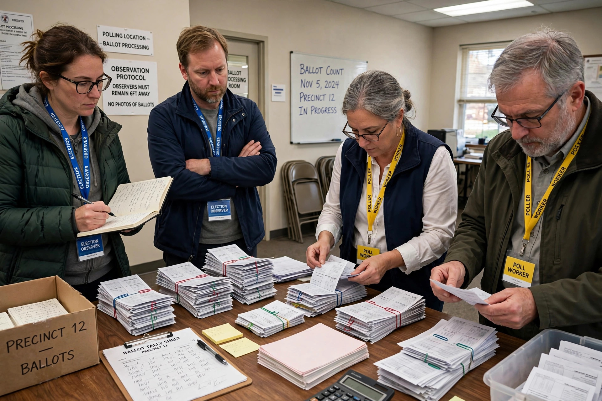

Election monitoring

Election monitoring is the observation of an election by one or more independent parties, typically from another country or from a non-governmental organisation, whose purpose is to assess the conduct of the election process on the basis of national legislation and international standards. Monitors may be short-term, observing voting and counting on election day, or long-term, following registration, campaigning and media coverage over weeks or months.
Organisations
Major monitoring bodies include the OSCE's Office for Democratic Institutions and Human Rights (ODIHR), the European Union's election observation missions, the Carter Center, the African Union, and the Organization of American States. Domestic citizen observer groups also operate in many countries and often conduct parallel vote tabulations to verify official counts.
Methodology
Missions deploy observers to polling stations, observe the opening, voting, closing and counting, and collect reports through standardised forms. Their public statements — preliminary findings shortly after election day and a final report with recommendations — carry political weight but monitors have no power to annul results.
Criticism
Election monitoring has been criticised for perceived double standards between geopolitical blocs, for "electoral tourism" by low-quality missions that endorse flawed elections, and for the practice of governments inviting friendly organisations to legitimise a process. Rival observer blocs sometimes issue contradictory verdicts on the same election.
See also: Voting rights, Ballot stuffing, Democracy.